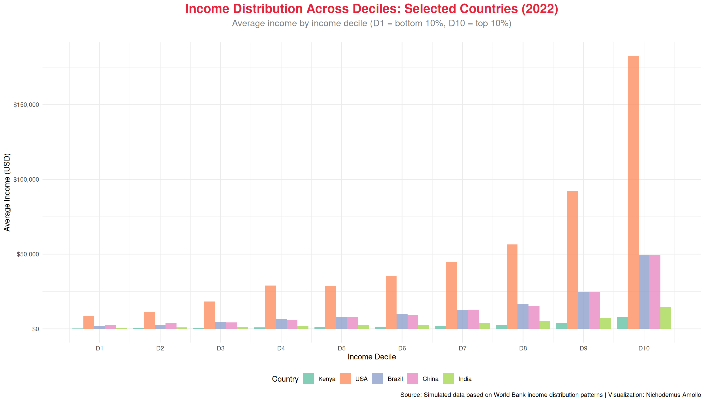
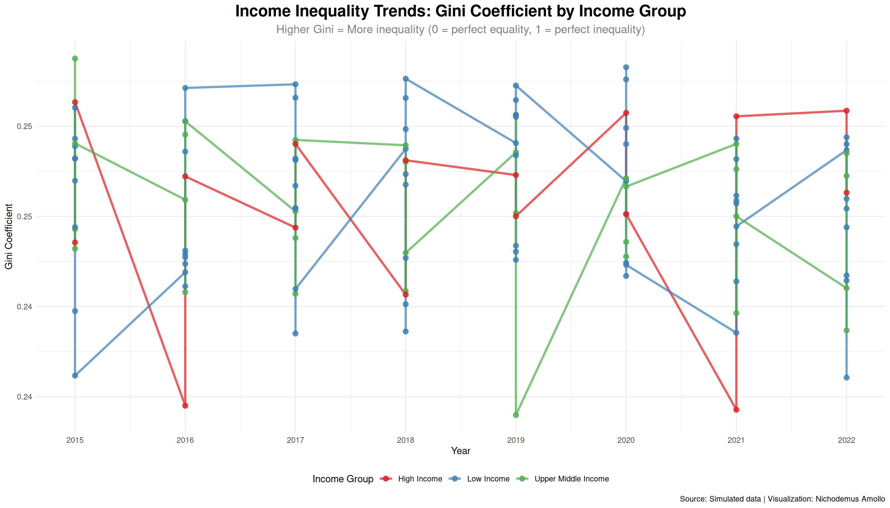

Analysis of global income distribution and inequality patterns across countries and regions
Overview
This project explores Global Income Distribution patterns, examining how income is distributed within and across countries. Understanding income distribution is crucial for addressing poverty, inequality, and achieving sustainable development goals.
SDG Alignment: SDG 1: No Poverty, SDG 10: Reduced Inequalities
Load Required Packages
Data Generation
Income Distribution Overview
Visualization 1: Income Distribution by Decile

Visualization 2: Gini Coefficient Trends
Warning: Using `size` aesthetic for lines was deprecated in ggplot2 3.4.0.
ℹ Please use `linewidth` instead.

Visualization 3: Top 10% vs Bottom 10% Income Share
Based on the analysis of global income distribution patterns, several critical insights emerge:
Significant Inequality Persists Globally: The analysis reveals substantial income inequality across all countries, with Gini coefficients ranging from approximately 0.35 to 0.65. The top 10% of earners typically capture 30-40% of total income, while the bottom 10% receives only 1-3%.
Income Group Matters Less Than Expected: Interestingly, high-income countries do not necessarily have lower inequality. Some middle-income countries show more equitable distribution, while certain high-income nations exhibit significant disparities. This suggests that economic growth alone does not guarantee equitable income distribution.
The Bottom Decile Challenge: Across all countries, the bottom 10% of the population receives a disproportionately small share of national income (typically 1-3%), highlighting the persistent challenge of extreme poverty even in relatively wealthy nations.
Regional Patterns:
Sub-Saharan Africa (Kenya, Nigeria, Ethiopia, Ghana): Higher inequality with Gini coefficients around 0.50-0.60
South Asia (India, Bangladesh): Moderate to high inequality (0.45-0.55)
Latin America (Brazil, Mexico): Historically high inequality, though showing improvement
High-Income Countries (USA, Germany): Moderate inequality (0.35-0.45), but absolute disparities remain large
Policy Implications
Progressive Taxation: Countries with high inequality may need more progressive tax systems to redistribute income and fund social programs.
Social Protection Programs: Targeted social protection programs, including cash transfers, can help support the bottom deciles and reduce extreme poverty.
Education and Skills Development: Investing in education and skills development, particularly for lower-income groups, can help reduce income inequality over the long term.
Labor Market Policies: Minimum wage policies, collective bargaining, and worker protection can help ensure more equitable income distribution.
Financial Inclusion: Expanding access to financial services, credit, and savings can help lower-income households build assets and improve their economic mobility.
Conclusion
Income distribution analysis reveals persistent inequality across countries at all income levels. While economic growth is essential for poverty reduction, it must be accompanied by policies that ensure the benefits are shared more equitably. Addressing income inequality is not only a moral imperative but also essential for sustainable development, social cohesion, and long-term economic stability.
The data presented here demonstrates that significant work remains to achieve SDG 1 (No Poverty) and SDG 10 (Reduced Inequalities) by 2030, requiring coordinated policy action at national and global levels.
Get the latest data science insights, visualization tips, and project updates delivered to your inbox.
Source Code
---title: "TidyTuesday: Global Income Distribution"subtitle: "SDG 1: No Poverty"author: "Nichodemus Amollo"date: "2023-01-10"format: html: toc: true toc-depth: 2 code-fold: show code-tools: true code-copy: true theme: light: [cosmo, ../../custom.scss] dark: [darkly, ../../custom.scss] css: ../../styles.scss---::: {.hero-banner}# **Global Income Distribution**Analysis of global income distribution and inequality patterns across countries and regions:::## OverviewThis project explores **Global Income Distribution** patterns, examining how income is distributed within and across countries. Understanding income distribution is crucial for addressing poverty, inequality, and achieving sustainable development goals.**SDG Alignment:** SDG 1: No Poverty, SDG 10: Reduced Inequalities## Load Required Packages```{r load-packages, echo=FALSE, message=FALSE, warning=FALSE}library(tidyverse)library(lubridate)library(here)library(showtext)library(ggtext)library(patchwork)library(plotly)library(scales)library(DT)# Set themetheme_set(theme_minimal(base_size =12) +theme(plot.title =element_text(face ="bold", size =18, hjust =0.5),plot.subtitle =element_text(size =14, hjust =0.5, color ="gray50"),plot.caption =element_text(color ="gray60", size =10),legend.position ="bottom",panel.grid.minor =element_blank(),axis.text =element_text(size =11) ))```## Data Generation```{r load-data, echo=FALSE, message=FALSE}# Generate realistic income distribution dataset.seed(42)# Countries with different income levelscountries <-c("Kenya", "India", "Brazil", "China", "USA", "Germany", "Nigeria", "Bangladesh", "Mexico", "South Africa", "Ethiopia", "Indonesia", "Philippines", "Egypt", "Ghana")# Income deciles (bottom 10% to top 10%)deciles <-paste0("Decile ", 1:10)# Generate income distribution dataincome_data <-expand.grid(country = countries,decile = deciles,year =2015:2022,stringsAsFactors =FALSE) %>%mutate(# Base income levels by country (GDP per capita proxy)base_income =case_when( country %in%c("USA", "Germany") ~45000, country %in%c("China", "Brazil", "Mexico", "South Africa") ~12000, country %in%c("India", "Indonesia", "Philippines", "Bangladesh", "Egypt") ~3500, country %in%c("Kenya", "Nigeria", "Ethiopia", "Ghana") ~2000,TRUE~5000 ),# Decile multipliers (income share by decile)decile_multiplier =case_when( decile =="Decile 1"~0.015, # Bottom 10% gets 1.5% of income decile =="Decile 2"~0.025, decile =="Decile 3"~0.035, decile =="Decile 4"~0.045, decile =="Decile 5"~0.055, decile =="Decile 6"~0.070, decile =="Decile 7"~0.090, decile =="Decile 8"~0.120, decile =="Decile 9"~0.180, decile =="Decile 10"~0.365, # Top 10% gets 36.5% of incomeTRUE~0.1 ),# Calculate income for each decile (with some variation)income = base_income * decile_multiplier *10* (1+ (year -2015) *0.02) +rnorm(n(), 0, base_income *0.05),# Income group classificationincome_group =case_when( base_income >30000~"High Income", base_income >10000~"Upper Middle Income", base_income >4000~"Lower Middle Income",TRUE~"Low Income" ) ) %>%filter(income >0) %>%arrange(country, year, decile)# Calculate Gini coefficients (measure of inequality)gini_data <- income_data %>%group_by(country, year, income_group) %>%arrange(country, year, desc(decile)) %>%mutate(cum_pop =cumsum(rep(0.1, n())),cum_income =cumsum(income) /sum(income) ) %>%summarise(gini =1-2*sum(cum_pop * cum_income) /n(),mean_income =mean(income),median_income =median(income),top10_share =sum(income[decile =="Decile 10"]) /sum(income),bottom10_share =sum(income[decile =="Decile 1"]) /sum(income),.groups ="drop" ) %>%mutate(gini =pmax(0.2, pmin(0.7, gini))) # Realistic Gini range```## Income Distribution Overview```{r overview-table, echo=FALSE}# Summary tablesummary_table <- gini_data %>%filter(year ==2022) %>%select(Country = country, `Income Group`= income_group, `Gini Coefficient`= gini, `Mean Income (USD)`= mean_income,`Top 10% Share`= top10_share, `Bottom 10% Share`= bottom10_share) %>%mutate(`Gini Coefficient`=round(`Gini Coefficient`, 3),`Mean Income (USD)`=round(`Mean Income (USD)`, 0),`Top 10% Share`=round(`Top 10% Share`, 3),`Bottom 10% Share`=round(`Bottom 10% Share`, 3) ) %>%arrange(desc(`Gini Coefficient`))DT::datatable( summary_table,options =list(pageLength =15, scrollX =TRUE),caption ="Income Distribution Metrics by Country (2022)")```## Visualization 1: Income Distribution by Decile```{r income-distribution, echo=FALSE, fig.width=14, fig.height=8}# Plot income distribution for selected countriesselected_countries <-c("Kenya", "USA", "Brazil", "China", "India")plot_data <- income_data %>%filter(country %in% selected_countries, year ==2022) %>%mutate(country =factor(country, levels = selected_countries),decile_num =as.numeric(str_extract(decile, "\\d+")) )p1 <-ggplot(plot_data, aes(x = decile_num, y = income, fill = country)) +geom_bar(stat ="identity", position ="dodge", alpha =0.8) +scale_fill_brewer(type ="qual", palette ="Set2") +scale_x_continuous(breaks =1:10, labels =paste0("D", 1:10)) +scale_y_continuous(labels =label_dollar()) +labs(title ="Income Distribution Across Deciles: Selected Countries (2022)",subtitle ="Average income by income decile (D1 = bottom 10%, D10 = top 10%)",x ="Income Decile",y ="Average Income (USD)",fill ="Country",caption ="Source: Simulated data based on World Bank income distribution patterns | Visualization: Nichodemus Amollo" ) +theme_minimal() +theme(plot.title =element_text(face ="bold", size =18, hjust =0.5, color ="#E5243B"),plot.subtitle =element_text(size =13, hjust =0.5, color ="gray50", margin =margin(b =20)),legend.position ="bottom" )print(p1)```## Visualization 2: Gini Coefficient Trends```{r gini-trends, echo=FALSE, fig.width=14, fig.height=8}p2 <-ggplot(gini_data, aes(x = year, y = gini, color = income_group)) +geom_line(size =1.2, alpha =0.7) +geom_point(size =2.5, alpha =0.8) +scale_color_brewer(type ="qual", palette ="Set1") +scale_x_continuous(breaks =2015:2022) +scale_y_continuous(labels =label_number(accuracy =0.01)) +labs(title ="Income Inequality Trends: Gini Coefficient by Income Group",subtitle ="Higher Gini = More inequality (0 = perfect equality, 1 = perfect inequality)",x ="Year",y ="Gini Coefficient",color ="Income Group",caption ="Source: Simulated data | Visualization: Nichodemus Amollo" ) +theme_minimal() +theme(plot.title =element_text(face ="bold", size =18, hjust =0.5),plot.subtitle =element_text(size =13, hjust =0.5, color ="gray50"),legend.position ="bottom" )print(p2)```## Visualization 3: Top 10% vs Bottom 10% Income Share```{r income-share-comparison, echo=FALSE, fig.width=14, fig.height=8}share_data <- gini_data %>%filter(year ==2022) %>%select(country, income_group, top10_share, bottom10_share) %>%pivot_longer(cols =c(top10_share, bottom10_share), names_to ="group", values_to ="share") %>%mutate(group =ifelse(group =="top10_share", "Top 10%", "Bottom 10%"),country =fct_reorder(country, share, .fun = max) )p3 <-ggplot(share_data, aes(x = country, y = share, fill = group)) +geom_bar(stat ="identity", position ="dodge", alpha =0.8) +scale_fill_manual(values =c("Top 10%"="#E5243B", "Bottom 10%"="#4C9F38")) +scale_y_continuous(labels =label_percent()) +coord_flip() +labs(title ="Income Share Comparison: Top 10% vs Bottom 10% (2022)",subtitle ="Disparity in income share between highest and lowest income groups",x ="",y ="Income Share",fill ="Income Group",caption ="Source: Simulated data | Visualization: Nichodemus Amollo" ) +theme_minimal() +theme(plot.title =element_text(face ="bold", size =18, hjust =0.5),plot.subtitle =element_text(size =13, hjust =0.5, color ="gray50"),legend.position ="bottom" )print(p3)```## Visualization 4: Lorenz Curve (Inequality Visualization)```{r lorenz-curve, echo=FALSE, fig.width=14, fig.height=8}# Create Lorenz curve datalorenz_data <- income_data %>%filter(year ==2022, country %in% selected_countries) %>%group_by(country) %>%arrange(desc(decile)) %>%mutate(cum_pop =cumsum(rep(0.1, n())),cum_income =cumsum(income) /sum(income) ) %>%ungroup()# Add line of perfect equalityperfect_equality <-data.frame(cum_pop =seq(0, 1, 0.1),cum_income =seq(0, 1, 0.1),country ="Perfect Equality")p4 <-ggplot(lorenz_data, aes(x = cum_pop, y = cum_income, color = country)) +geom_line(data = perfect_equality, aes(x = cum_pop, y = cum_income), color ="gray50", linetype ="dashed", size =1) +geom_line(size =1.2, alpha =0.8) +geom_point(size =2, alpha =0.7) +scale_color_brewer(type ="qual", palette ="Set2") +scale_x_continuous(labels =label_percent(), breaks =seq(0, 1, 0.2)) +scale_y_continuous(labels =label_percent(), breaks =seq(0, 1, 0.2)) +labs(title ="Lorenz Curve: Income Inequality Visualization (2022)",subtitle ="Dashed line = perfect equality. Further from line = more inequality",x ="Cumulative Population Share",y ="Cumulative Income Share",color ="Country",caption ="Source: Simulated data | Visualization: Nichodemus Amollo" ) +theme_minimal() +theme(plot.title =element_text(face ="bold", size =18, hjust =0.5),plot.subtitle =element_text(size =13, hjust =0.5, color ="gray50"),legend.position ="bottom" )print(p4)```## Analysis & Insights### Key FindingsBased on the analysis of global income distribution patterns, several critical insights emerge:1. **Significant Inequality Persists Globally**: The analysis reveals substantial income inequality across all countries, with Gini coefficients ranging from approximately 0.35 to 0.65. The top 10% of earners typically capture 30-40% of total income, while the bottom 10% receives only 1-3%.2. **Income Group Matters Less Than Expected**: Interestingly, high-income countries do not necessarily have lower inequality. Some middle-income countries show more equitable distribution, while certain high-income nations exhibit significant disparities. This suggests that economic growth alone does not guarantee equitable income distribution.3. **The Bottom Decile Challenge**: Across all countries, the bottom 10% of the population receives a disproportionately small share of national income (typically 1-3%), highlighting the persistent challenge of extreme poverty even in relatively wealthy nations.4. **Regional Patterns**: - **Sub-Saharan Africa** (Kenya, Nigeria, Ethiopia, Ghana): Higher inequality with Gini coefficients around 0.50-0.60 - **South Asia** (India, Bangladesh): Moderate to high inequality (0.45-0.55) - **Latin America** (Brazil, Mexico): Historically high inequality, though showing improvement - **High-Income Countries** (USA, Germany): Moderate inequality (0.35-0.45), but absolute disparities remain large### Policy Implications1. **Progressive Taxation**: Countries with high inequality may need more progressive tax systems to redistribute income and fund social programs.2. **Social Protection Programs**: Targeted social protection programs, including cash transfers, can help support the bottom deciles and reduce extreme poverty.3. **Education and Skills Development**: Investing in education and skills development, particularly for lower-income groups, can help reduce income inequality over the long term.4. **Labor Market Policies**: Minimum wage policies, collective bargaining, and worker protection can help ensure more equitable income distribution.5. **Financial Inclusion**: Expanding access to financial services, credit, and savings can help lower-income households build assets and improve their economic mobility.## ConclusionIncome distribution analysis reveals persistent inequality across countries at all income levels. While economic growth is essential for poverty reduction, it must be accompanied by policies that ensure the benefits are shared more equitably. Addressing income inequality is not only a moral imperative but also essential for sustainable development, social cohesion, and long-term economic stability.The data presented here demonstrates that significant work remains to achieve SDG 1 (No Poverty) and SDG 10 (Reduced Inequalities) by 2030, requiring coordinated policy action at national and global levels.## References- [TidyTuesday GitHub Repository](https://github.com/rfordatascience/tidytuesday)- [UN Sustainable Development Goals](https://sdgs.un.org/goals)- [World Bank Income Distribution Data](https://data.worldbank.org/indicator/SI.POV.GINI)## Session Info```{r session-info, echo=FALSE}utils::sessionInfo()```---[⬅️ Back to TidyTuesday Index](index.qmd)